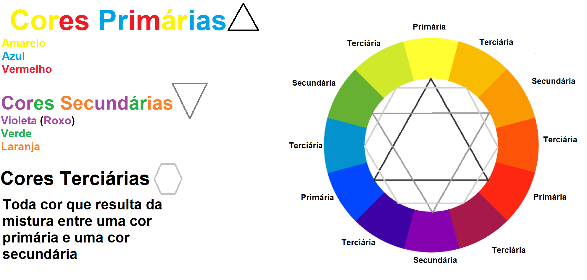
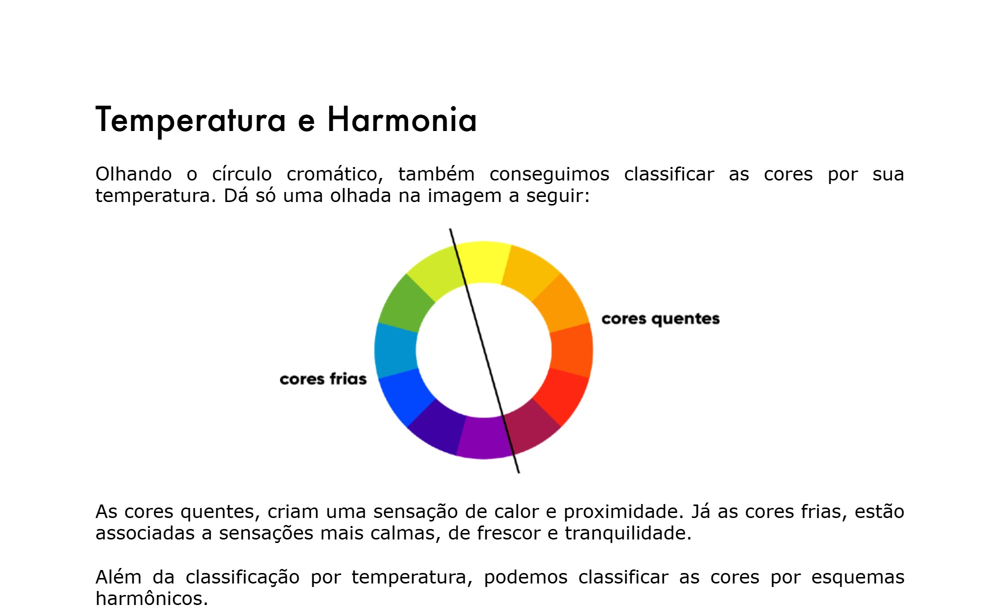

Primeiramente antes de escolher quais cores seram usadas para gerar a Ideitidade Visual (no nosso caso de uma aplicação) primeiro necessitamos de informações sobre os objetivos da aplicação se o proprio desenvolvedor será o proprietário da aplicação, o que ele tem como objetivo para a aplicação, se um cliente for o proprietário ele(a) tem uma ideia de como que a ideitidade visual da aplicação será, de como ele(a) quer que seja? se já possui um Logo ou algo que represente a ideitidade visual da aplicaçãoSe sim, caso seja uma Logo que possua uma cor então essa cor será selecionada para a Paleta de cores de imediato, caso o proprietário não aceite alterações na Logo; Enfim antes de escolher as cores da Peleta informações sobre o que será a aplicação devem ser obtidas e claramente definidas. isso porque é depedendo do proposito da aplicação que você escolhe quais seram as cores mais adequadas para desenvolver a ideitidade visual da aplicação e SIM existem cores que são mais eficases em dar vida/ideitidade visual a certo tipo de aplicação do que outras.
Por exemplo um site de um hospital que possua em sua Paleta de Cores a cor Violeta(Roxa) como tonalidade principal NÃO FICARÍA LEGAL, isso porque além dessa Paleta possuir em sua composição cores que se relacionam a cor principal, que é a roxa ESSAS CORES NÃO SÃO USADAS EM AMBIENTES DE HOSPITAL PORTANTO NÃO SÃO ADEQUADAS, VOCÊ SENTE ISSO, COMO SE CADA "NICHO" TIVESSE CORES QUE "COMBINAM" e é justamente por causa disso que você precisa de informações, porque através delas você tera uma ideia de quais cores são mais adequadas para escolher e montar sua Paleta de Cores
O que é uma Paleta de Cores? resumidamente Paleta de Cores é um conjunto de cores harmônicas que são utilizadas para no nosso caso desenvolver a Ideitidade Visual do nosso Site. e uma Paleta pode possuir de 3 a 5 cores no máximo sendo que 4 cores são a média recomendada e lembrando que as cores BRANCA E PRETA SEMPRE FARAM PARTE FARAM PARTE DA SUA PALETA MESMO NÃO SENDO RECONHECIDAS COMO CORES QUE COMPONHEM A PALETA, ISSO PORQUE BRANCO E PRETO SÃO CORES UTILIZADAS EM TUDO PORTANTO ESTAS CORES FARAM PARTE DA SUA PALETA INDEPENDENTE DE QUAIS CORES VOCÊ ESCOLHER e essas cores são selecionadas a partir de um Circulo Cromático
O que é um Circo Cromático? Bem Circulo Cromático é um circulo que possui em sua composição varias cores e tonalidades de cores que foram selecionadas apartir de um Sistema de Cores, no caso de Desenvolvimento de Sites O CIRCULO CROMÁTICO QUE POSSUI EM SUA COMPOSIÇÃO CORES REPRESENTADAS PELO SISTEMA rgb É O MAIS UTILIZADO como o que esta abaixo. Lembrese que rgb não é o único sistema de cor que um circulo cromático pode ter então não se limite apenas a um sistema; Explore, experimente e veja o resultado.
Como você pode ver acima o circulo cromático é essa roda das cores ai, e desse tipo de circulo que você vai ter as cores nas quais você podera escolher para montar a Paleta. E note que eu descrevi quais são as categorias das cores, para explicar mais fácil como o desenvolvimento de uma Paleta de Cores funciona; E como esse circulo é baseado no sistema de cor rgb as cores que o componhem possuem como cores primárias Azul Amarelo e Vermelho, como cores Secundárias Verde Violeta(Roxo) e Laranja e como Cores Terciárias todas as cores que são o resultado da mistura entre uma Cor Primária e uma Cor Secundária e lembrese Ao nomear uma cor Terciaria SEMPRE COLOQUE O NOME DA COR PRIMARIA PRIMEIRO E COMPLETE COM O NOME DA COR SECUNDARIA Essas definições foram feitas baseadas no sistema de cores que o Circulo utiliza, para outros esquemas os resultados seriam diferentes
Você sabia que uma cor pode ser quente ou fria? Sim essas "categorias" basicamente indicam se "uma cor transmite uma sensação de Calor ou se transmite sensação Fria veja um exemplo abaixo"
E agora nós podemos falar sobre os Esquemas Harmônicos estes são métodos que você tem para pode selecionar as cores que possuem maior contraste entre si mas o que é isso? Contraste é resumidamente opocição, é a cor que se posicionaria na direção diretamente no lado oposto em relação a outra cor em um circulo cromatico, veja mais exemplos de quais são estes esquemas de Harmônização

Acima você tem circulos cromáticos que utilizam os esquemas de cores, sendo o primeiro circulo o que usa o Esquema Complementar e o segundo circulo usa o Esquema Análogo
ESQUEMA COMPLEMENTAR : Usa a cor que mais contrasta (se oponhe) posicionalmente a cor selecionada; No caso a Cor principal é a Amarela e a cor que está exatamente na posição oposta da Amarela é a Violeta(Roxa) e esse é o funcionamento do esquema
Esquema Análogo : Usa as cores que são vizinhas a cor principal, no Exemplo a cor Vizinha a esquerda (Amarelo Esverdeado) da Cor Amarela e a cor vizinha a direita (Amarelo Alaranjando)da cor Amarela são selecionadas

Acima você tem vários Esquemas de Cores e Note que Pode fazer uso de mais de um Esquema de Cor para desenvolver sua paleta, juntando Complementar com Análogo, Análogo com Relacionado enfim o uso desses esquemas vai da tua vontade e da necessidade de cores para sua Paleta; Agora vamos falar sobre os esquemas o primeiro circulo é fácil de entender caso você tenha entendido as explicações dos esquemas anteriores, aqui nós temos a união dos mesmos.
Esquema Análogo Complementar : Sendo a cor Amarela a cor principal, use as cores vizinhas a mesma e finalize selecionado a cor que mais contrasta com a cor principal(Amarela)
O segundo circulo usa o Esquema Análogo Relacionado, esse esquema é um pouquinho diferente mas é fácil de entender veja
Esquema Análogo Relacionado :Selecine a cor principal e uma cor vizinha, ápos isso tire uma medida de noveta graus partindo da cor principal e indo para o lado das cores da cor vizinha; selecione a cor que resultar da medida
O terceiro circulo usa o Esquema Intercalado, esse esquema seleciona cores saltando as cores vizinhas da cor principal
O quarto e ultimo circulo utiliza o esquema Triadico e o nome diz por si só, apartir da cor principal, faça a medida de um triangulo e selecione as cores resultantes

O primeiro circulo usa o Esquema Quadrado, nome dis por si só apartir da cor principal faça a medida em forma de quadrado e selecione as cores resultantes
O segundo circulo usa o esquema tetrádico que é um esquema que usa dois pares de cores sendo que cada cor que pertençe a um par possui grande contraste com a cor do outro par
E o ultimo circulo cromático usa o Esquema de Monocromia, esse esquema é caracterizado por selecionar uma cor gerar e tons dessa mesma cor manipulando a saturação e o brilho, assim os resultados dessas alterações vão nos dar as outras cores que pertençeram a paleta e também nos ajudara a alcançar o Degrade, que é quando uma cor possui tons dela mesma